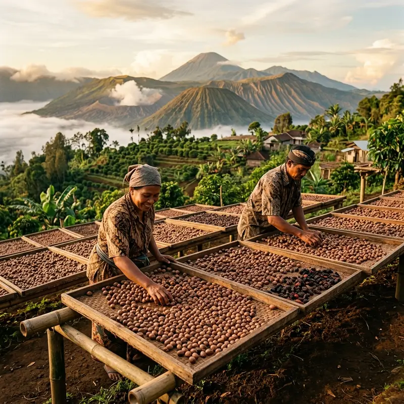

Menghubungkan tanah subur kepulauan rempah Nusantara dengan pembeli internasional melalui perdagangan yang adil, berkelanjutan, dan berstandar ilmiah.

Ryco Spices didirikan dengan satu cita-cita utama: mengembalikan kejayaan rempah Indonesia di panggung dunia dengan cara yang modern, bersih, dan berintegritas. Sebagian besar komoditas kami bersumber langsung dari pohon-pohon pala tua di Kepulauan Banda dan Maluku.
Kami tidak sekadar menjadi perantara dagang, melainkan mitra sejati bagi ratusan keluarga petani. Dengan melibatkan tim agronomis dan dokter tanaman, kami memastikan praktik budidaya tetap ramah lingkungan, pohon terbebas dari hama, serta proses pengeringan menghasilkan kadar air di bawah 10% sesuai standar ketat Uni Eropa dan Amerika Serikat.
Menjadi eksportir rempah terkemuka di Asia Tenggara yang diakui secara global atas kualitas produk tanpa cacat, integritas operasional, serta kontribusi nyata terhadap kelestarian ekosistem dan kesejahteraan petani lokal di pelosok Nusantara.
Transparansi spesifikasi kadar air, berat, dan hasil uji lab tanpa manipulasi sampel.
Praktik panen ramah lingkungan yang menjaga kelestarian pohon pala hingga puluhan tahun mendatang.
Menjamin pembelian hasil panen dengan skema harga stabil di atas rata-rata tengkulak konvensional.
Penggunaan solar dryer dome higienis untuk mencegah tumbuhnya jamur selama proses pengeringan biji.